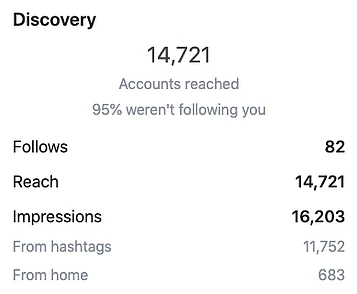
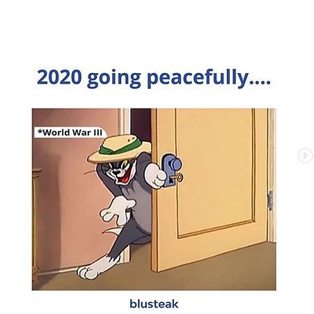
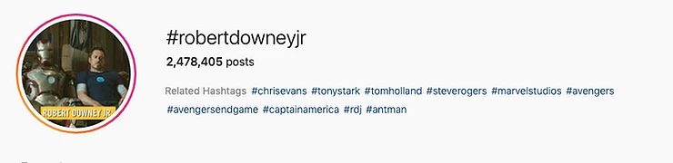
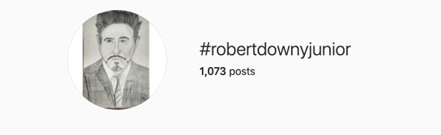
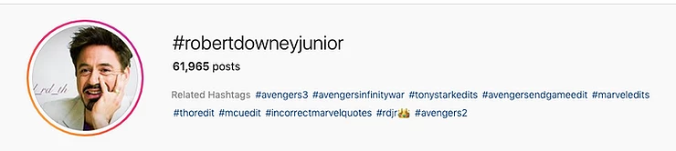

Hello all, if you have come here, probably you are looking forward to
finding how to get thousands of reach for your small Instagram account
through hashtags.
Yes, in fact, you have come to the right place. I have been looking for
the answer for more than a year now. Read all there is to read about
hashtags, all most all the explanatory videos there are, used most of
the ”magical” Instagram hashtag hack tools
Nothing worked.
Hence I started to experiment with what my guts told me. Initially,
again some of the things I tried didn’t work. Then for the last 4-5
months, I got a hack that has been working wonders for me. Ie, almost
90% posts that I post with the ‘Hashtag Trick’ that I use ends up
getting at least 3 times more reach than the total number of followers
that my account has.
This is how much followers we have:
This is the number of reaches that we nowadays get from Hashtags
Getting into the hack:
Let me warn something. This trick or another trick in the whole world
will not work if the content is not good enough. Yes, I know sometimes
we get this creativity block. Everyone goes through that. And to solve
that you need a topic to start brainstorming from right?
For that, I recommend always going for the topic that is trending right
now on the web. From my experience, anything that is relevant to the day
or the times has multiple times more potential than any regular content
that you’re going to push out.
You might ask, How the hell am I going to find those topics?
The answer lies in a tool called Google trends by Google.
All you need is to adjust to your country and it will show you what’s
going on there.
I am going to guide you through an example.
As you can see Robert Downey Jr is trending now. (Probably it's his
birthday tomorrow)
I’ll take that for consideration and will show you how I’ll be creating
hashtags for that topic.
And one more tip, always go for minimal designs like this:
Or if you’re bad at designing or you don’t have a designer with you, you can always go on to create memes out of it like these:
Now getting onto hashtags, to start with let us put a maximum limit of hashtags we will be using. I always try to keep it in between 8 to 10 so as to not to make the post super spammy.
No. I never use any third-party apps for getting hashtags. All you need is the beautiful little search bar that is natively built-in your Instagram app.
Now, this is the most important part. Never go for big hashtags, ie hashtags that have got a number of posts in it more than 400k. Like this one:
Also, don’t go below 20k like this one:
So the sweet point is to select hashtags which have the number of posts between 30k to 400k. Like this one:

The reason I do this is that I want my posts to be in the hashtags page
for at least half-an-hour, which will not be the case for a hashtag with
10million posts.
These are the hashtags on the topic Robert Downey that qualifies the
criteria:
#robertdowneyjunior#avengers3#tonystarkedit#robertdowneyjredit#ironmanedit#ironmanfans#avengersassemble#marvelfan
#yelenabelova
Don’t use #-Ronaldo in a post that has nothing to do with Ronaldo or
Football. Instagram will find out you’re spamming hashtags and will cut
the reach.
All the hashtags should be super relevant to the post’s content.
Among the selected hashtags this hashtag doesn’t fit in well.
#yelenabelova Hence removing it.
Therefore this is our final list:
#robertdowneyjunior #avengers3 #tonystarkedit #robertdowneyjredit
#ironmanedit #ironmanfans #avengersassemble #marvelfan
Now I hope you got an idea on how to select hashtags to get lots of
reaches and hopefully lots of likes and followers too!
Good luck :)
[About the author: Jaison Thomas is an entrepreneur, speaker & writer. He co-founded the digital marketing agency, Blusteak .]
Tags: Instagram hashtags for likes, Instagram hashtags for photography, Instagram hashtags for followers, Instagram hashtags likes and followers, Instagram hashtags for travel, Instagram hashtags search 2020
 +91 77366 95526
+91 77366 95526
 contact@blusteak.com
contact@blusteak.com